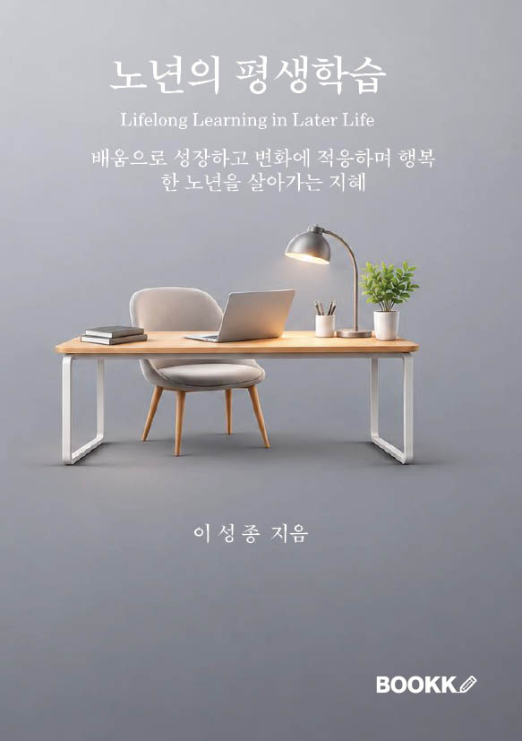

도서 소개
노년기 학습의 특성을 살펴보고, 각자의 경험과 관심을 바탕으로 배움을 이어가는 방법을 안내합니다. 스마트폰과 키오스크처럼 일상에서 만나는 기술을 익히고, 인공지능을 정보 검색과 글쓰기에 활용하는 주제도 다룹니다.
주요 내용
기억과 학습, 생활건강교육, 문화예술, 세대 간 소통과 자원봉사를 다룹니다. 평생교육기관과 지역사회 프로그램, 온라인 학습을 활용하는 방법을 함께 살펴봅니다.

노년기 학습의 특성을 살펴보고, 각자의 경험과 관심을 바탕으로 배움을 이어가는 방법을 안내합니다. 스마트폰과 키오스크처럼 일상에서 만나는 기술을 익히고, 인공지능을 정보 검색과 글쓰기에 활용하는 주제도 다룹니다.
기억과 학습, 생활건강교육, 문화예술, 세대 간 소통과 자원봉사를 다룹니다. 평생교육기관과 지역사회 프로그램, 온라인 학습을 활용하는 방법을 함께 살펴봅니다.